Als erstes musst du deine Twitter Daten anfragen.
Öffne dafür die Desktop Seite von Twitter.
Wähle "Mehr" aus.
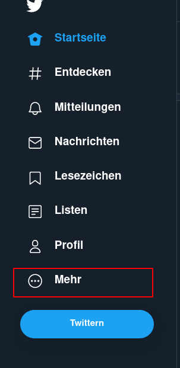
Click auf "Einstellungen und Datenschutz"
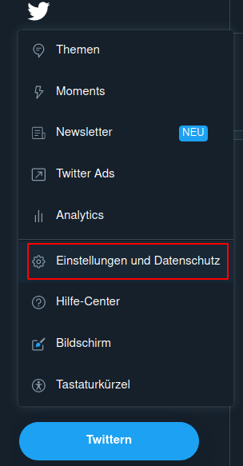
Click auf "Dein Account" und dann auf "Ein Archiv deiner Daten herunterladen". Du wirst dein Password eingeben müssen.
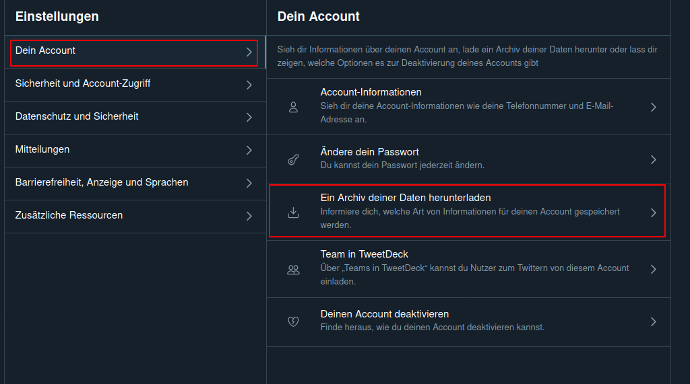
Folge den weiteren Anweisungen.
Innerhalb der nächsten 2 Tage erhältst du eine Email von Twitter mit den Download link deiner Daten.
Öffne das Twitter Archiv (z.b. "twitter-2021-03-10-4a70[...]38d3.zip").
Öffne den "Data" ordner im Twitter Archive
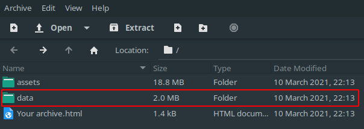
Öffne die "block.js" Datei im Ordner
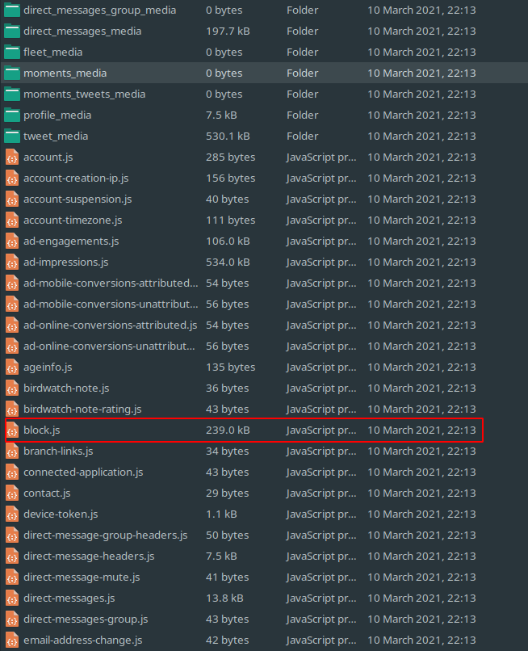
Kopiere den inhalt der "block.js" Datei
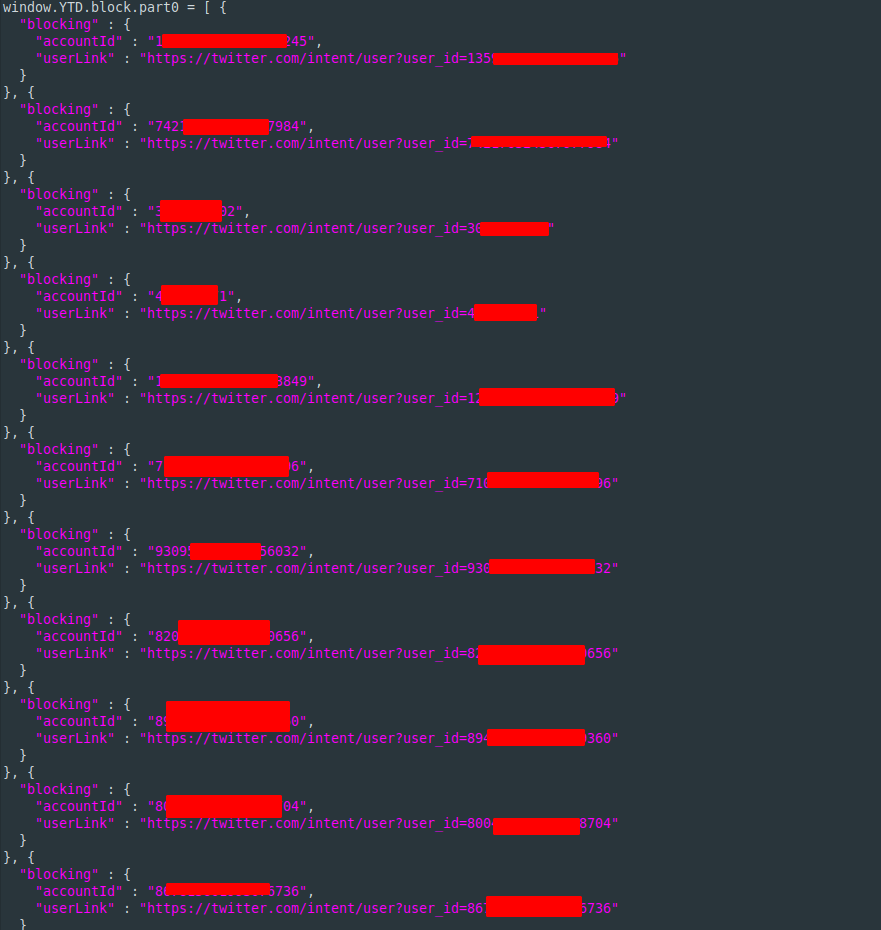
Füge den Inhalt in das Textfeld oben links ein und drücke "Konvertieren"
Kopiere den Text aus den rechten Textfeld.
Öffne die Follower Seite eines Accounts.
Click auf das Blockchain Symbol
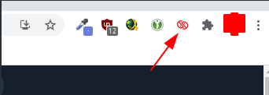
Click auf "run import"
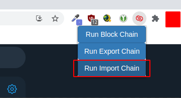
Füge den Text ein und
click auf "start import"
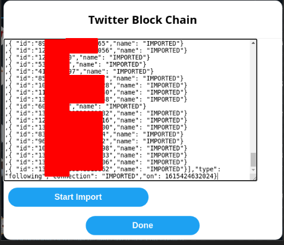
Folge Schritt 1 und 2 der Anleitung.
Speichere die "block.js" Datei auf deinen PC.
Öffne Redblock und click auf "Blocklist"
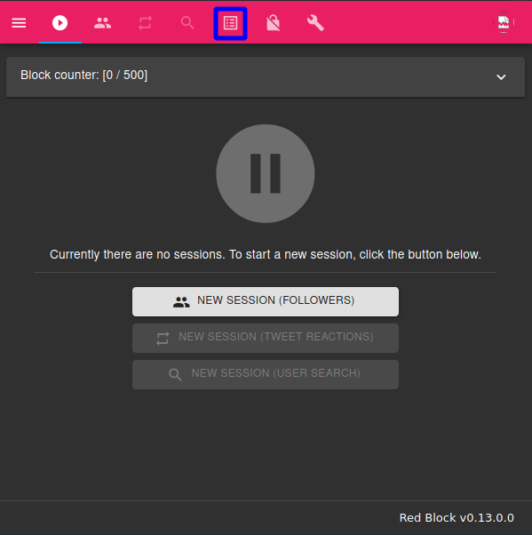
Click auf "OPEN IN NEW TAB"
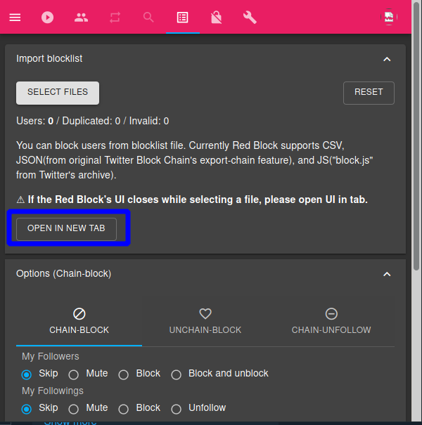
Click auf "SELECT FILES" und wähle "block.js" aus
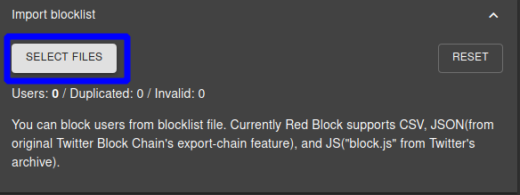
Red Block sollte nun alle Accounts in der Datei blockieren.